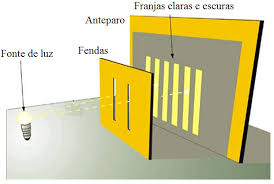

Experimento da Dupla Fenda (Thomas Young, 1801)
O Experimento da Dupla Fenda, realizado por Thomas Young em 1801, demonstrou a natureza ondulatória da luz. Ao passar luz através de duas fendas estreitas, Young observou um padrão de interferência, confirmando que a luz se comporta como uma onda.
O experimento consiste em fazer a luz (ou partículas) passar por duas fendas paralelas muito estreitas, que estão próximas uma da outra, em uma tela opaca. A luz que passa por essas fendas atinge uma tela de detecção (ou um anteparo) que registra o padrão resultante.
O que Young observou foi um padrão de franjas brilhantes e escuras na tela de detecção. Esse padrão é conhecido como "padrão de interferência". Se você passasse a luz através de apenas uma das fendas, veria um padrão simples, semelhante ao que se esperaria de uma fonte de luz que passa por um buraco. No entanto, quando ambas as fendas estão abertas, a luz que passa por elas interfere uma com a outra, criando regiões de máxima e mínima intensidade luminosa.
Interferência: O padrão de interferência surge porque as ondas de luz que passam por cada fenda se sobrepõem. Quando as ondas estão em fase (ou seja, suas cristas e vales estão alinhados), elas se reforçam, criando franjas brilhantes. Quando estão fora de fase (ou seja, cristas de uma onda coincidindo com os vales da outra), elas se anulam, criando franjas escuras.
Padrão de Interferência: O padrão de interferência demonstra a interferência construtiva e destrutiva das ondas de água que passaram pelas duas fendas. Esse padrão é muito semelhante ao padrão de interferência observado com luz no Experimento da Dupla Fenda.
Difração: As ondas de água se curvam ao redor das bordas das fendas e se espalham, um fenômeno conhecido como difração. A extensão da difração e a forma do padrão dependem do tamanho das fendas e do comprimento de onda das ondas geradas.